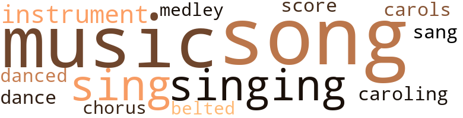
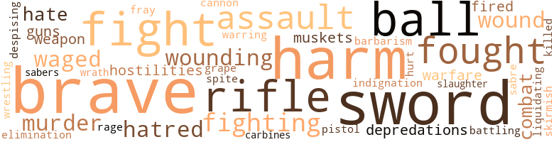

Problem (The), by Gilmore, F. Grant (1915)
24 music-related terms matched in this text.
Most frequent terms in this topic: song (4); music (4); sing (2); instrument (2); singing (2)
belt_out.v.01
Definition: sing loudly and forcefully
| word | sentence |
|---|---|
| belted | But yet though belted round with death , their hearts were undismayed , Though breathed upon by fiery breath no soldier 's cheek betrayed The fear that makes men cowards , but like Sparta 's deathless band , Each won a name and linked with fame the honor of his land . |
carol.n.01
Definition: joyful religious song celebrating the birth of Christ
| word | sentence |
|---|---|
| carols | The birds were singing their carols to their mates , flitting from bough to bough , while the rippling stream danced over the rocks and pebbles . |
caroling.n.01
Definition: singing joyful religious songs (especially at Christmas)
| word | sentence |
|---|---|
| caroling | Nearby , the careless dancing of the water of the brook over the rocks , the merry caroling of the birds in the trees , and the perfume of the flowers , were the homage given to the principals of this romance . |
chorus.n.01
Definition: any utterance produced simultaneously by a group
| word | sentence |
|---|---|
| chorus | All present arose , joining in the chorus . |
dance.n.01
Definition: an artistic form of nonverbal communication
| word | sentence |
|---|---|
| dance | At the entrance of the ball room she was met by the Surgeon , who claimed her for a dance , and she was soon a part of the gay throng . |
dance.v.03
Definition: skip, leap, or move up and down or sideways
| word | sentence |
|---|---|
| danced | The birds were singing their carols to their mates , flitting from bough to bough , while the rippling stream danced over the rocks and pebbles . |
medley.n.01
Definition: a musical composition consisting of a series of songs or other musical pieces from various sources
| word | sentence |
|---|---|
| medley | After the evening meal , the band played the opening number , a medley comprising patriotic airs ; concluding with " My Country , Tis of Thee . " |
music.n.01
Definition: an artistic form of auditory communication incorporating instrumental or vocal tones in a structured and continuous manner
| word | sentence |
|---|---|
| music | Skilled in music and art you returned to us to brighten our home . |
| music | She exhibited a rare taste for art and music , being blessed with a marvelous voice . |
| music | Freda 's Choice Mid the s weet strains of music from the Hungarian orchestra , the perfume of flowers , and the thousands of electric bulbs entwined in the shrubbery , made Rosewood into a garden of Eden the night when Freda was presented to Washington society . |
| music | " Sound a call upon your bugle , " then said Dodge , and at the word The trumpeter gave a blast that sleeping echoes stirred ; And merrily the music swelled and floated far away , Bearing hope into the valley where the leaguered blue coats lay ; Who , gazing eagerly aloft , first caught the brilliant gleaming Of weapon bright , and then beheld the troopers Guidon streaming . |
musical_instrument.n.01
Definition: any of various devices or contrivances that can be used to produce musical tones or sounds
| word | sentence |
|---|---|
| instrument | In love , as well as in other pursuits , we are but an instrument in the hands of Him who controls the earth , the sky , and the seas . |
| instrument | Awakening from her lethargy , and realizing that she was only an instrument of pleasure for those aboard , she responded , singing , " Coming Thro ' the Rye . " |
score.n.02
Definition: a written form of a musical composition; parts for different instruments appear on separate staves on large pages
| word | sentence |
|---|---|
| score | Now , Fairfax , you , at one time , attempted to settle an old score with me . |
sing.v.02
Definition: produce tones with the voice
| word | sentence |
|---|---|
| sang | I never knew the love of a mother save that of my nurse , one of your race , who , through her tears , sang me to sleep . |
| singing | The birds were singing their carols to their mates , flitting from bough to bough , while the rippling stream danced over the rocks and pebbles . |
| sing | Everywhere throughout the vast assemblage Freda 's beauty was openly commended , and after the earnest solicitation of her mother she consented to sing . |
| sing | The song ended , and amid deafening applause , she was asked to sing again . |
singing.n.01
Definition: the act of singing vocal music
| word | sentence |
|---|---|
| singing | Reinforced by General Funston , the scattered army was again united , and mid the singing of " A Hot Time in the Old Town To-night , " the famous Ninth and Tenth Cavalries returned to camp . |
song.n.01
Definition: a short musical composition with words
| word | sentence |
|---|---|
| song | Near the last , Miss Freda Waters was introduced , and she chose for her selection that old inspiring song , " Just a Song at Twilight , " and in the course of its rendition , her thoughts seemed to leave those who surrounded her , to join with those who were far away , and when she came to the part of the song which says : " Though my heart beat weary , Sad the day and long . " |
| Song | Near the last , Miss Freda Waters was introduced , and she chose for her selection that old inspiring song , " Just a Song at Twilight , " and in the course of its rendition , her thoughts seemed to leave those who surrounded her , to join with those who were far away , and when she came to the part of the song which says : " Though my heart beat weary , Sad the day and long . " |
| song | Near the last , Miss Freda Waters was introduced , and she chose for her selection that old inspiring song , " Just a Song at Twilight , " and in the course of its rendition , her thoughts seemed to leave those who surrounded her , to join with those who were far away , and when she came to the part of the song which says : " Though my heart beat weary , Sad the day and long . " |
| song | The song ended , and amid deafening applause , she was asked to sing again . |
| song | And men whose deeds shall live in song , whose story shall be told To generations yet to come , and be inscribed in gold Upon the page of history , to show how Saxon daring Once captured fame with Sons of Ham the great achievement sharing . |
126 violence-related terms matched in this text.
Most frequent terms in this topic: brave (13); sword (12); harm (11); ball (7); fight (7)
affray.n.02
Definition: a noisy fight
| word | sentence |
|---|---|
| fray | Couriers were received and dispatched ; transports arriving , on which was Colonel Roswell with his roughriders , a formidable array of fighters , strong , active , reared in the West , known as cowboys and ranchmen , not considering the dangers , but like their leader was ever ready to be in the thickest of the fray . |
battle.v.01
Definition: battle or contend against in or as if in a battle
| word | sentence |
|---|---|
| combat | The Sergeant realized that a union between the two was impossible , and unable to combat the dictates of his heart he permitted himself to be a willing slave , with no reward for the sacrifice . |
| battling | Far upon the road leading to the blockhouse , surrounded by a few brave followers , Colonel Roswell is seen , sword in hand , battling against superior numbers , which must only fall soon by the advancing enemy . |
| combat | fate had decreed this romantic change embodying four lives to be severed , for at this time the Colonel contracted a serious illness and all the aid of medical science was brought to bear to combat the ravages of this disease . |
brush.n.06
Definition: a minor short-term fight
| word | sentence |
|---|---|
| skirmish | Freda , hearing of the skirmish in which Henderson was personally engaged , was the first to greet him with , " Are you hurt ? " |
brutality.n.02
Definition: a brutal barbarous savage act
| word | sentence |
|---|---|
| barbarism | Ten thousand miles from our last scenes of military activities , a semi-civilized country where barbarism and idolatry reigned , a tropical climate , unexplored , inhabited by a race short in stature , a mixture of Mongolian , Spanish and Malay , we find ourselves , through conquest of war , possessors . |
cannon.n.04
Definition: heavy automatic gun fired from an airplane
| word | sentence |
|---|---|
| cannon | The shrieks of the smaller craft , and the booming of cannon of the old sea-fighters , seemed to say to the " America , " " We are glad that you have come . " |
carbine.n.01
Definition: light automatic rifle
| word | sentence |
|---|---|
| carbines | Those eight and thirty troopers , with their leaders , true and tried , Abandoning their baggage , wagons , tents and everything But their carbines and their sabers , and like birds upon the wing , From the golden light of morning until sunset 's latest glow Sailing swiftly o'er the prairie with their faces to the foe ; Sailing swiftly on and steadily to reach the distant goal , With their hearts as true to duty as the needle to the pole . |
contemn.v.01
Definition: look down on with disdain
| word | sentence |
|---|---|
| despising | A mind that 's truly brave Stands despising Storms arising , And ca n't be made a slave . |
depredation.n.01
Definition: an act of plundering and pillaging and marauding
| word | sentence |
|---|---|
| depredations | The band 's depredations had become unbearable , so it was decided to send Lanky to an uncle who agreed to raise and educate him . |
| depredations | It was during this period that scouting parties , returning to headquarters , reported the many bands of guerrillas , who menaced the lives of the outpost and committed numerous depredations against life and property . |
elimination.n.05
Definition: the murder of a competitor
| word | sentence |
|---|---|
| elimination | The United States had begun a war for the elimination of despotism and tyranny , supplanting the same with the new reign of law and justice to all mankind ; thus we have the motive for this great conflict to be waged relentlessly , until liberty stands predominant upon the Western Hemisphere . |
engage.v.07
Definition: carry on (wars, battles, or campaigns)
| word | sentence |
|---|---|
| waged | The United States had begun a war for the elimination of despotism and tyranny , supplanting the same with the new reign of law and justice to all mankind ; thus we have the motive for this great conflict to be waged relentlessly , until liberty stands predominant upon the Western Hemisphere . |
| waged | It was this bandit chieftain that the United States had to contend with , and the aggressive campaign to be waged was to be of relentless character . |
| waged | Here the gods of happiness reigned ; while near by , out in the shrubbery , a bitter personal encounter was being waged . |
fight.n.05
Definition: a boxing or wrestling match
| word | sentence |
|---|---|
| fight | You may have the choice of weapons , and there shall be a fight to death . |
| fight | It was in the assault at Fort Wagner when General Shaw fell dead at the head of the negro regiment , and there mingled some of the best blood of New England with that of these black men , whom he had volunteered to lead in the fight for the freedom of their race . |
fight.v.02
Definition: fight against or resist strongly
| word | sentence |
|---|---|
| fight | I love to fight and I love to be opposed , but when women cry , I lose my heart . ' " |
| fight | After seeing your safely into the care of one who will shield and love you , and the fortune you have inherited being enough to satisfy your every wish , I will marry my first love , the only love I ever knew , ' To fight for the glory of the Stars and Stripes ! ' |
| fight | The death of Mrs. Williams and the care of the new arrival shattered the health of Amanda , but realizing the care of her child , and the true mother 's love , gave her strength to fight the battle of life . |
| fought | The noble manner in which they had fought a greater and more powerful foe gained for them that regard and respect due to individuals and countries ; so the sympathy of the world , fortified by the will of God . |
| fought | Into the deep thicket they plunged , disorganized in forces ; they fought man for man , hand to hand , body and soul in action . |
| fighting | I saw the Colonel , sabre in hand , fighting like mad . |
| fighting | The reciprocal exchanges , lasting for a short period , gave new vigor to the fighting craft , whose destiny was Manila in the Philippine Islands . |
| fighting | Rushing to her side , Colonel Roswell tenderly raised the fainting girl , and giving her into the care of Quito , who assisted her mistress to her room , he turned sharply to the Surgeon , and , in a soft but commanding tone , said , " Surgeon Fairfax , this man whom you accuse , is not the man who would commit a crime , and when I look back to the time when I was surrounded by the enemy and my comrades were shot from my side , there I saw , out from the smoke of battle , this man fighting his way towards me . |
| fight | Men of brawn , men of might , Come hence to fight for right . |
| fought | Negro soldiers have fought in every war and have , at all times , proved their worth . |
| fought | No race ever fought more earnestly to gain its freedom than in the Civil conflict . |
| fight | In the Revolutionary War the negro soldier did not fight , side by side , with his brother , but was scattered among the white soldiers , and at that time , history tells us , his sacrificing love for his comrades brought him into favor with his commander . |
| fought | Although suffering heavy losses they fought with bulldog tenacity and determination . |
| fighting | The services which the negro troops performed in the Civil War , fighting for the freedom of their race , not only convinced the officers , who fought by their side , that the race deserved to be free , but it served to convince the great mass of people in the North that the negroes were fit for freedom . |
| fought | The services which the negro troops performed in the Civil War , fighting for the freedom of their race , not only convinced the officers , who fought by their side , that the race deserved to be free , but it served to convince the great mass of people in the North that the negroes were fit for freedom . |
fury.n.01
Definition: a feeling of intense anger
| word | sentence |
|---|---|
| rage | With His mighty power He controls the storms in its rage of destruction , saving those of His will . |
grapeshot.n.01
Definition: a cluster of small projectiles fired together from a cannon to produce a hail of shot
| word | sentence |
|---|---|
| grape | A large grape arbor , drooping vines , rustic boughs , that would grace an entrance to the Garden of Eden , was where Freda and Henderson were seen to enter . |
gun.n.01
Definition: a weapon that discharges a missile at high velocity (especially from a metal tube or barrel)
| word | sentence |
|---|---|
| guns | " On through the battle 's crush , With but one thought aflush , Driving their lords like chaff , At the guns ' mouths they laugh ; At the slippery brands , Leaping with open hands , Down they tear , man and horse ; Down in their awful course , All their eyes forward bent , Rushed the Black Regiment ! " |
| guns | In the campaign , which resulted in the fall of Richmond , June 15 , 1864 , colored troops captured seven guns in front of Pittsburg , and on July 30th , they took part in the disastrous attack at the " Crater , " in which four thousand men were wounded , lost , or captured in the fruitless and hopeless assault . |
harm.v.01
Definition: cause or do harm to
| word | sentence |
|---|---|
| harm | I charge you to guard it , and if he attempts to harm you , the knowledge that you have holds the only evidence of his treasonable acts , and will deter him from putting into execution any of his plots . " |
| harm | " Why should you harm us ? |
| harm | In open conflict he had no fear of him or any other man , but to harm him would wound her ; so after the temporary feeling had worn off , he resolved , that from that moment he would cease to see her , thereby avoiding all unpleasantness . |
hate.n.01
Definition: the emotion of intense dislike; a feeling of dislike so strong that it demands action
| word | sentence |
|---|---|
| hate | The gods of fate , supplanting the gods of hate , was a fitting climax to this eventful life . |
| hatred | Inspired by that bitter personal hatred for Henderson , Surgeon Fairfax again attempted to draw his revolver . |
| hatred | From that moment a determined resolution was made by Fairfax , strengthened by that deep Southern hatred , to remove , once and forever , the only barrier between him and the woman he loves . |
| hate | This noble woman , who had done so much for charity and assisted the unfortunate , sat and sighed when she thought of that passage of scripture which reads : " The sins of the fathers shall be visited upon the children unto the third and fourth generations of them that hate Me . " |
| hatred | The feeling of hatred was so great that the desecration of the honor of his country was a small matter to him . |
hostility.n.01
Definition: a hostile (very unfriendly) disposition
| word | sentence |
|---|---|
| hostilities | Quito , a young widow of a Cuban soldier who was killed just prior to the opening of hostilities , was found one day by Surgeon Fairfax lurking near the entrance of the hospital tent . |
| hostilities | At the close of hostilities between the United States and Spain the regiments remained under arms for orders . |
hurt.v.04
Definition: cause damage or affect negatively
| word | sentence |
|---|---|
| hurt | " You will pardon me , Surgeon , you may see me this evening , " and with a haughty mien , as if hurt by the Surgeon 's act , she returned to the house . |
indignation.n.01
Definition: a feeling of righteous anger
| word | sentence |
|---|---|
| indignation | The hot Southern blood of Fairfax fairly boiled with indignation and revenge , and with difficulty he was restrained from attempting personal assault upon his accuser . |
injury.n.01
Definition: any physical damage to the body caused by violence or accident or fracture etc.
| word | sentence |
|---|---|
| harm | " Do n't worry , Amanda , " he said , one day after the death of her father , " I will be your friend , and no harm shall befall you . |
| harm | " Come , Colonel , I know you did n't mean any harm . |
| harm | But before an answer could be returned , the Surgeon rushed toward Henderson as if about to do him bodily harm . |
| harm | He has done no harm . |
| harm | He would willingly suffer the ignominy of his own future that no harm might befall her . |
| harm | Only those on watch were awake to guard against any possible harm that may arise ; and the ship rolled on . |
| harm | " Me mean no harm . " |
| harm | In the deep stillness of the night he prayed to God that no harm would befall her . |
kill.v.10
Definition: cause the death of, without intention
| word | sentence |
|---|---|
| killed | Quito , a young widow of a Cuban soldier who was killed just prior to the opening of hostilities , was found one day by Surgeon Fairfax lurking near the entrance of the hospital tent . |
malice.n.01
Definition: feeling a need to see others suffer
| word | sentence |
|---|---|
| spite | Colonel Roswell , for the first time in his career as a soldier , lost his manly composure , and wept like a child ; and , as he left that cell , he swore that in spite of all , Henderson would never serve one day for the offence charged against him . |
murder.n.01
Definition: unlawful premeditated killing of a human being by a human being
| word | sentence |
|---|---|
| murder | I learned that Fairfax was the man who joined Pinto , the bandit , to rob the legation , and that he attempted to murder you at the forks , when you led your men against his band of bandits . |
| murder | " This black dog secrets himself in the shrubbery of our home , there to wait the coming of darkness ; to force himself into the house , to rob , and perhaps murder . |
| murder | You have come here to rob the legation and , perhaps , murder . |
musket.n.01
Definition: a muzzle-loading shoulder gun with a long barrel; formerly used by infantrymen
| word | sentence |
|---|---|
| muskets | Hearing a few scattered shots , paying little heed to the same until the sentinel came to me with the news that Colonel Roswell and his roughriders were on their way to take the hill , not dreaming that he would put into execution such a rash act , when , all at once , I could hear firing of muskets , and with the aid of my glass I saw that it was all too true . |
| muskets | When out from the smoke and muskets I saw Henderson , sword in hand , cutting to the right and to the left . |
musket_ball.n.01
Definition: a solid projectile that is shot by a musket
| word | sentence |
|---|---|
| ball | What do you say to a grand ball in honor of your past achievements ? " |
| ball | Mechanical genius , coupled with the natural beauty of Rosewood , made a picture rivaling the splendor of the Arabian Nights on the occasion of the grand ball given in honor of Surgeon Fairfax . |
| ball | The massive ball room with its mirrored floor , the conservatory with its rare plants and flowers , the extensive lawn with its many nooks and by-ways , where little tete-a-tetes could be enjoyed , made Rosewood an improvised Garden of Eden . |
| ball | Everything that wealth afforded was brought to bear to keep from this ball any approach of sorrow . |
| ball | At the entrance of the ball room she was met by the Surgeon , who claimed her for a dance , and she was soon a part of the gay throng . |
| ball | After the day was well spent in pleasures befitting the occasion , a grand ball at the legation being the climax , and which was in the height of gaiety , Henderson returned . |
| ball | The heavens looked in wonder at the signal bugle call - Down rushed a living avalanche , while ring and pop of ball And foemen 's shouts and cries of pain resounded on the air , As the horsemen rode to glory through death 's intervening lair , As they cleft the savage phalanx , like a mighty wedge of steel , Leaving here and there a fragment crushed by valor 's iron heel . |
neutralize.v.04
Definition: get rid of (someone who may be a threat) by killing
| word | sentence |
|---|---|
| liquidating | At his death Susan and her daughter Amanda found themselves confronted with the responsibilities of entirely liquidating the mortgage on the farm , as well as maintaining the same . |
open_fire.v.01
Definition: start firing a weapon
| word | sentence |
|---|---|
| fired | Passing in and out among the trees , closely followed by his pursuer , he was about to make his escape , when fired on by the gardener . |
| fired | I fired at him ; closed in on him , and after a pretty hard struggle we brought him here . " |
pistol.n.01
Definition: a firearm that is held and fired with one hand
| word | sentence |
|---|---|
| pistol | His courage was never disputed , and he won many medals in pistol and rifle contests . |
rape.n.03
Definition: the crime of forcing a woman to submit to sexual intercourse against her will
| word | sentence |
|---|---|
| assault | The hot Southern blood of Fairfax fairly boiled with indignation and revenge , and with difficulty he was restrained from attempting personal assault upon his accuser . |
| assault | The first engagement in which the colored soldiers took part was the assault on Fort Hudson , La. , May 27 , 1863 , made by the troops under General Banks . |
| assault | The assault on Fort Wagner by the 54th , the battle of Honey Hill , and other numerous engagements , taxed the true worth of these brave men . |
| assault | It was in the assault at Fort Wagner when General Shaw fell dead at the head of the negro regiment , and there mingled some of the best blood of New England with that of these black men , whom he had volunteered to lead in the fight for the freedom of their race . |
| assault | In the campaign , which resulted in the fall of Richmond , June 15 , 1864 , colored troops captured seven guns in front of Pittsburg , and on July 30th , they took part in the disastrous attack at the " Crater , " in which four thousand men were wounded , lost , or captured in the fruitless and hopeless assault . |
rifle.n.01
Definition: a shoulder firearm with a long barrel and a rifled bore
| word | sentence |
|---|---|
| rifle | His courage was never disputed , and he won many medals in pistol and rifle contests . |
| rifle | " General , there will be some lively times here and the boys are very anxious , " said Captain Jenkins , of Steamer Mayflower , to General Funston , " and as our ships have only had rifle practice , the boys aboard are anxious for some real work . " |
| rifle | So we find a life of happiness amid gruesome scenes , and who could foretell the climax of this eventful beginning , for it was very shortly after that the sound of rifle was heard one clear morning , long before those sleeping peacefully in their homes were awake , and at gray dawn of that memorable day the word was passed through camp that Colonel Roswell and his roughriders were on their way to take the blockhouse . |
| rifles | and mid the shots of enemies ' rifles he reached the Colonel 's side , followed by his brave comrades . |
| rifle | An extensive program was arranged , including daring horsemanship , a drill , rifle contest , wrestling , fencing , boxing , and many other athletic exercises for which suitable prizes would be awarded to the successful contestants . |
| rifle | Outnumbered by four to one they bravely made dispute With those Cossacks of the Western World , the wily , vengeful Ute ; And though comrades fell around them to be numbered with the slain , And others writhed in agony upon the sodden plain , Yet the living never faltered , but with cheer and rifle crack Boldly flung the foe defiance o'er death 's beaten , bloody track . |
saber.n.01
Definition: a fencing sword with a v-shaped blade and a slightly curved handle
| word | sentence |
|---|---|
| sabre | I saw the Colonel , sabre in hand , fighting like mad . |
| sabers | Those eight and thirty troopers , with their leaders , true and tried , Abandoning their baggage , wagons , tents and everything But their carbines and their sabers , and like birds upon the wing , From the golden light of morning until sunset 's latest glow Sailing swiftly o'er the prairie with their faces to the foe ; Sailing swiftly on and steadily to reach the distant goal , With their hearts as true to duty as the needle to the pole . |
slaughter.n.03
Definition: the savage and excessive killing of many people
| word | sentence |
|---|---|
| slaughter | Full three score leagues and ten away from war 's red slaughter pen , With Dodge and Hughes of Saxon blood are eight and thirty men ; Aye , men , as you shall truly own , though on each dusky face The God of Nature has affixed the seal of Afric 's race . |
sword.n.01
Definition: a cutting or thrusting weapon that has a long metal blade and a hilt with a hand guard
| word | sentence |
|---|---|
| sword | The struggle in the dark ; the capture of the sword with the owner 's name engraved on the blade ; the return to the legation ; his silence for her sake , and at last his return-to the United States . |
| sword | Before I go I will leave this sword , the sword I took from Fairfax the night he attempted my life . |
| sword | Before I go I will leave this sword , the sword I took from Fairfax the night he attempted my life . |
| sword | These men dare not arrest me , as I am sent here by the government of the United States to arrest you for treason , and I hold , as evidence , this sword , your name engraved upon its blade , and the sworn confession of Pinto , your accomplice . |
| sword | and taking the sword , which was meant for his destruction , in a determined , directed blow , he broke it across his knee . |
| sword | Far upon the road leading to the blockhouse , surrounded by a few brave followers , Colonel Roswell is seen , sword in hand , battling against superior numbers , which must only fall soon by the advancing enemy . |
| sword | When out from the smoke and muskets I saw Henderson , sword in hand , cutting to the right and to the left . |
| sword | Fairfax attempted to pierce Henderson with his sword , but discovered that it was no easy task . |
| sword | Henderson , being of an athletic build , was almost a match for both of them , and after wrenching the sword from Fairfax 's hand , he was able to draw his revolver and fire . |
| sword | After his escape from Henderson he was forced to leave his sword behind . |
| sword | He little thought Henderson recognized him , but the knowledge that Henderson had his sword with his name engraved upon the blade , gave him foreboding thoughts of impending danger . |
| sword | He fully recognized his assailant as Freda 's foster brother ; then , looking at the sword , his suspicions were confirmed . |
war.n.03
Definition: an active struggle between competing entities
| word | sentence |
|---|---|
| warfare | Men , who had left their loved ones at home , were in a new region infested with disease , venomous reptiles , and a hostile enemy , who depended solely upon guerrilla warfare . |
| warfare | For years the guerrilla warfare between Spain and this bandit chieftain was a source of much anxiety to the sovereignty of Spain . |
war.v.01
Definition: make or wage war
| word | sentence |
|---|---|
| warring | Unassisted she came upon the warring faction , and with outstretched arms toward Freda , she clearly and distinctly said , " Freda , I am strong now . |
weapon.n.01
Definition: any instrument or instrumentality used in fighting or hunting
| word | sentence |
|---|---|
| weapons | You may have the choice of weapons , and there shall be a fight to death . |
| weapon | " Sound a call upon your bugle , " then said Dodge , and at the word The trumpeter gave a blast that sleeping echoes stirred ; And merrily the music swelled and floated far away , Bearing hope into the valley where the leaguered blue coats lay ; Who , gazing eagerly aloft , first caught the brilliant gleaming Of weapon bright , and then beheld the troopers Guidon streaming . |
weather.v.01
Definition: face and withstand with courage
| word | sentence |
|---|---|
| brave | That little army , whose arduous labors bringing more personal satisfaction than honor achieved , was as brave in the discharge of their duties as any soldier who fell under their care , and that Christ-like influence over the unfortunate did more to bring back to health than all the medicine administered by the surgeons . |
| brave | Far upon the road leading to the blockhouse , surrounded by a few brave followers , Colonel Roswell is seen , sword in hand , battling against superior numbers , which must only fall soon by the advancing enemy . |
| brave | I saw the color bearers shot down , and I heard the groans of the wounded ; when over the prostrate forms of his own brave men Henderson plunged , and I heard his voice , clear and distinct , shouting , ' Charge ! ' |
| brave | and mid the shots of enemies ' rifles he reached the Colonel 's side , followed by his brave comrades . |
| brave | '' I know you will , " replied the Colonel , '' for he is too brave a man to die , and we need his service . |
| brave | Can this woman , whom I loved in my childhood , be as Desdemona , that loved Othello for his brave deeds ? |
| brave | When hope seemed almost gone , I saw the whiteness of his teeth and heard his strong , brave voice cry , ' Hold your own , Colonel , we 're coming . ' |
| brave | Many a brave soldier was shot from ambush without even a chance to fire in return . |
| brave | The men on guard at the outpost , the scouting parties , and the many detachments sent into the interior , took from that fete many brave men who could have proven their worth as aspiring athletes . |
| brave | They little dreamed that this man who had sworn to be true to his flag and country would plot the destruction of a brave comrade . |
| brave | In the stillness of the night this brave Othello stood there ; his thoughts seemed to drift back to many incidents of his past life , and in that far-off wilds he saw a face that smiled , inspiring him with confidence to do his duty as his conscience directed . |
| brave | The assault on Fort Wagner by the 54th , the battle of Honey Hill , and other numerous engagements , taxed the true worth of these brave men . |
| brave | Men have wondered at the gallant charge of England 's Light Brigade , On Balaklava 's bloody height , by Tennyson portrayed ; But I will tell you of as brave a deed , a grander , nobler sight , Than Rome or Balaklava saw , a deed of courage bright , The halo of whose glory adds new luster to the charms That gild the World of Chivalry with valiant feats of arms . |
wound.n.01
Definition: an injury to living tissue (especially an injury involving a cut or break in the skin)
| word | sentence |
|---|---|
| wound | He stood as one bewitched , not knowing how to reply ; then his strength of power returned and he said : " Miss Waters , ever since I have been under your care there is a deeper wound far greater than any given by this enemy ; a wound which medical science can not heal ' . |
| wound | He stood as one bewitched , not knowing how to reply ; then his strength of power returned and he said : " Miss Waters , ever since I have been under your care there is a deeper wound far greater than any given by this enemy ; a wound which medical science can not heal ' . |
| wounds | I see , I live , I love ; not in the world of life and happiness , but to soothe the wounds of the unfortunate I give my all . |
wound.n.04
Definition: the act of inflicting a wound
| word | sentence |
|---|---|
| wounding | The wounding of his heart was far greater than the wounding of his body , for he dare not hope for that which was beyond his power , and he stood silently awaiting the General 's reply . |
| wounding | The wounding of his heart was far greater than the wounding of his body , for he dare not hope for that which was beyond his power , and he stood silently awaiting the General 's reply . |
| wounding | He recited to her the charge of the Ninth Cavalry on San Juan Hill , the rescue of Colonel Roswell , and the wounding of Henderson ; the story told by Roswell of the bravery displayed by Henderson ; how Freda , being in charge of Henderson , heard it all , and that they were often seen together after he was able to be about . |
wrath.n.01
Definition: intense anger (usually on an epic scale)
| word | sentence |
|---|---|
| wrath | On that ride from hill to valley not a trooper held his seat , For of all their forty chargers never one had kept his feet , But had fallen ' neath the leaden blast that swept the fearful path Leading down from the summit through the dwelling place of wrath . |
wrestle.v.01
Definition: combat to overcome an opposing tendency or force
| word | sentence |
|---|---|
| wrestling | The Grecian-Roman bouts of wrestling demonstrated to the onlookers that there were men among them who had the brawn of the ancient gladiators . |
75 religion-related terms matched in this text.
Most frequent terms in this topic: God (22); gods (11); prayer (5); confession (4); blessings (4)
blessing.n.05
Definition: the act of praying for divine protection
| word | sentence |
|---|---|
| blessing | Give me your blessing ! " |
| blessings | You can give me your blessings in my new field of happiness . |
| blessing | The General 's work being finished he gave Freda his blessing , but it was a sad parting for the General , as he left behind one who had been with him for years . |
| blessings | It is true that you have asked me to be your wife many times before , and , as I owe a debt of gratitude to you and your mother , I now promise to become your wife - on one condition - that when the mystery of my parentage is clear , and you think , then as you do now , I give this frail life in payment for the blessings I have enjoyed in my youth . |
| blessings | " Friends , Miss Freda Waters , the playmate of my youth , has consented to be my promised wife ; I crave your blessings . " |
| blessing | Finding entreaties of no avail Mrs. Fairfax , with a true motherly spirit , gave Freda her blessing , with this proviso - that Surgeon Fairfax would again resume his duties in the army that he could be near to shield his promised bride . |
| blessings | In the seclusion of our thoughts , when night overshadows the earth , and we are alone with only our conscience , it is then we must bow our heads in earnest supplication to Him who makes all things right , that we may receive blessings for noble deeds and kind acts to all mankind . |
church.n.04
Definition: the body of people who attend or belong to a particular local church
| word | sentence |
|---|---|
| church | A village church , a noble gathering , a perfect day , solemn words , prompt responses , the pealing of the organ ; These were the crowning acts that cemented severed hearts . |
confession.n.05
Definition: the document that spells out the belief system of a given church (especially the Reformation churches of the 16th century)
| word | sentence |
|---|---|
| confession | These men dare not arrest me , as I am sent here by the government of the United States to arrest you for treason , and I hold , as evidence , this sword , your name engraved upon its blade , and the sworn confession of Pinto , your accomplice . |
| confession | After hearing the confession of her mother , Freda rushed to Amanda , and throwing her arms around her neck , cried , " Amanda ! |
| confession | Suiting the action to the word , he tore the confession of Pinto into pieces , Two saddened hearts wended their way home to renew life under different conditions . |
| confession | The newspapers , in glaring headlines , described the crime , and from a prejudicial viewpoint , laid great stress on the confession made by the culprit . |
creed.n.01
Definition: any system of principles or beliefs
| word | sentence |
|---|---|
| creed | The day of the trial brought to court men of every race , creed , and position . |
eden.n.01
Definition: any place of complete bliss and delight and peace
| word | sentence |
|---|---|
| Eden | A large grape arbor , drooping vines , rustic boughs , that would grace an entrance to the Garden of Eden , was where Freda and Henderson were seen to enter . |
| heaven | All this the world knows well ; yet none knows well To shun the heaven that leads men to this hell . |
| Eden | The massive ball room with its mirrored floor , the conservatory with its rare plants and flowers , the extensive lawn with its many nooks and by-ways , where little tete-a-tetes could be enjoyed , made Rosewood an improvised Garden of Eden . |
| Eden | Freda 's Choice Mid the s weet strains of music from the Hungarian orchestra , the perfume of flowers , and the thousands of electric bulbs entwined in the shrubbery , made Rosewood into a garden of Eden the night when Freda was presented to Washington society . |
| heavens | The heavens looked in wonder at the signal bugle call - Down rushed a living avalanche , while ring and pop of ball And foemen 's shouts and cries of pain resounded on the air , As the horsemen rode to glory through death 's intervening lair , As they cleft the savage phalanx , like a mighty wedge of steel , Leaving here and there a fragment crushed by valor 's iron heel . |
god.n.03
Definition: a man of such superior qualities that he seems like a deity to other people
| word | sentence |
|---|---|
| God | Amanda always longed for her return , and she prayed God nightly that he would spare her life that she might again see the child whom she loved as her own . |
| God | No , Surgeon , I must go to those who need me , and God will bless you and your dear mother for encouraging a heart whose future deeds will add glory to us all . " |
| gods | In an instant , like a crazed tiger , Fairfax snatched the papers from his mother 's hand , and with an oath he screamed , " By the gods she shall not have them ! |
| God | God has released me from the vow I once made . |
| gods | The gods of fate , supplanting the gods of hate , was a fitting climax to this eventful life . |
| gods | The gods of fate , supplanting the gods of hate , was a fitting climax to this eventful life . |
| God | As God forgives , so do I. Take me to my mother ! ' ' |
| God | In the solitude of her chamber she knelt and prayed to God that he would shield and protect her . |
| God | After a deathlike silence , the voice of Henderson was heard to say , " General , to convict Surgeon Fairfax for this grave crime , you must have evidence ; that evidence I hold , and may God in His infinite grace forgive him as I forgive . " |
| God | God bless you ! '' |
| God | " Sergeant , God has sent you to this humble home to shield and protect two lone women . |
| God | " Freda , the time is all too long before my return , but as God has been good to us both , and if it is His will that nothing intervenes , I will soon return to claim you as my own . |
| God | Far away , loved ones prayed to God that he would watch over , guide , and protect those who would give their lives for their country . |
| God | The noble manner in which they had fought a greater and more powerful foe gained for them that regard and respect due to individuals and countries ; so the sympathy of the world , fortified by the will of God . |
| God | Freda bent over the form of Henderson and uttered a soft prayer that God would spare him to enjoy the fruits of victory , and from that moment there awoke in that sleeping heart thoughts of future happiness , and she pictured there that which she never had dreamed , '' That life is worth living . " |
| God | Long through the vigil of the night a living angel watched over this semi-conscious hero , guided by the thought that duty commanded her to make a sacrifice , and to remain awake that any physical turn for the worse would be arrested , and , as God had given this hero to the world , for his recovery she felt that she was personally responsible . |
| God | Why , Oh why , did God in His infinite grace allow a heart , whose whole thought was for the glory of his country , to sulk and cower under the magnetic influence of one so weak in physical force , yet unconsciously making a slave of sterner stuff . |
| gods | As though sent by the gods of destruction , Surgeon Fairfax heard all . |
| gods | If so , I swear by the gods to thwart every act of his that would rob me of the only woman in this world for me . " |
| gods | What have I done that the gods of fate have crushed my ambition ? |
| gods | And fate , as if playing to the will of the gods of fate , Freda entered . |
| God | God bless you both ! " and that mother 's heart went out to her boy whose every wish was her prayer . |
| God | The trees bowed in supplication to the soft breezes that blew through their ponderous arms , and God 's sun looked down and smiled , giving warmth to the earth , that all the subjects of Providence might be blessed . |
| gods | Here the gods of happiness reigned ; while near by , out in the shrubbery , a bitter personal encounter was being waged . |
| gods | Thus the gods of fate played their all-important role to blight the lives of those who so short a time ago were blessed by the gods of love . |
| gods | Thus the gods of fate played their all-important role to blight the lives of those who so short a time ago were blessed by the gods of love . |
| God | Anxious - hearts wished them " Bon Voyage , " and prayed that God would care for and return them to those who loved them . |
| God | I have no doubt as to your pure and good intentions , and I trust you will ever be able to do what is right in the sight of God and man . |
| God | In the deep stillness of the night he prayed to God that no harm would befall her . |
| gods | You shall know who it is later ; but before he answers to Uncle Sam , I swear by the gods , he shall answer to me . " |
| God | God has ordained it and I bow to His will . |
| God | Full three score leagues and ten away from war 's red slaughter pen , With Dodge and Hughes of Saxon blood are eight and thirty men ; Aye , men , as you shall truly own , though on each dusky face The God of Nature has affixed the seal of Afric 's race . |
| God | Yet the God who rules the tempest warded off each fated stroke Till within the frail intrenchment they had planted sure relief , Building bulwarks of their bodies until succor came in chief . |
idol.n.01
Definition: a material effigy that is worshipped
| word | sentence |
|---|---|
| idol | He was the idol of his mother and the pride of his father , and was closely watched that no accident would befall him ; thus he grew to be a promising young man . |
idolatry.n.02
Definition: the worship of idols; the worship of images that are not God
| word | sentence |
|---|---|
| idolatry | Ten thousand miles from our last scenes of military activities , a semi-civilized country where barbarism and idolatry reigned , a tropical climate , unexplored , inhabited by a race short in stature , a mixture of Mongolian , Spanish and Malay , we find ourselves , through conquest of war , possessors . |
messiah.n.01
Definition: any expected deliverer
| word | sentence |
|---|---|
| Christ | Would you see me unhappy , or will you join with me in serving humanity , like Christ , who gave His life for the world that all might be saved ? |
praise.n.02
Definition: offering words of homage as an act of worship
| word | sentence |
|---|---|
| praise | Then hearing the words of praise for the gallantry displayed by you upon the battle field , of your sacrifice in the discharge of your duty , Sergeant Henderson , I saw in you that which all women see when their soul is awakened to the thought that life holds all that is dear to us ; and , as you will leave me , let this be our prayer , that , though the laws of the land forbid , there is a higher law where souls may rest in peace in that world where parting is no more . " |
prayer.n.01
Definition: the act of communicating with a deity (especially as a petition or in adoration or contrition or thanksgiving)
| word | sentence |
|---|---|
| prayer | That feeble prayer will not be answered now . |
| prayers | O , thou child of many prayers ! |
| prayer | Freda bent over the form of Henderson and uttered a soft prayer that God would spare him to enjoy the fruits of victory , and from that moment there awoke in that sleeping heart thoughts of future happiness , and she pictured there that which she never had dreamed , '' That life is worth living . " |
| prayer | Then hearing the words of praise for the gallantry displayed by you upon the battle field , of your sacrifice in the discharge of your duty , Sergeant Henderson , I saw in you that which all women see when their soul is awakened to the thought that life holds all that is dear to us ; and , as you will leave me , let this be our prayer , that , though the laws of the land forbid , there is a higher law where souls may rest in peace in that world where parting is no more . " |
| prayer | God bless you both ! " and that mother 's heart went out to her boy whose every wish was her prayer . |
| prayer | I now pray to you the prayer that we will make before the judgment seat of Him who will judge us as we have judged those who have sinned against us to release this man , and you will be granting me the wish of my life . " |
religion.n.01
Definition: a strong belief in a supernatural power or powers that control human destiny
| word | sentence |
|---|---|
| faith | How to escape we know not ; only the power of faith brings us peace . |
| faith | Tell the story to your children , O ye mothers of our land , To each their noble daring , tell them how a faithful band Won the royal right forevermore to wear the Knightly Crest When they carved their faith to glory through the Cossacks of the West . |
sacrifice.v.04
Definition: make a sacrifice of; in religious rituals
| word | sentence |
|---|---|
| sacrificing | In the Revolutionary War the negro soldier did not fight , side by side , with his brother , but was scattered among the white soldiers , and at that time , history tells us , his sacrificing love for his comrades brought him into favor with his commander . |
saint.n.02
Definition: person of exceptional holiness
| word | sentence |
|---|---|
| angel | Long through the vigil of the night a living angel watched over this semi-conscious hero , guided by the thought that duty commanded her to make a sacrifice , and to remain awake that any physical turn for the worse would be arrested , and , as God had given this hero to the world , for his recovery she felt that she was personally responsible . |
| angels | Among that number of living angels was Freda , clad in a delicate blue with an emblem of the Red Cross upon her arm . |
satan.n.01
Definition: (Judeo-Christian and Islamic religions) chief spirit of evil and adversary of God; tempter of mankind; master of Hell
| word | sentence |
|---|---|
| devils | " Oh , not very far , Colonel ; but you must be careful ; those devils are lying in ambush , and they are all sharpshooters and will pick you off at will . " |
| devils | Henderson , starting on a scouting expedition , made the following report to General Funston : " General , we have found that it is almost impossible to make an open charge against these red devils , owing to the growth of the underbrush , which is even far better than trenches . |
| devils | " Henderson , " said the General , " I must have reliable and trustworthy men to go in pursuit of those devils . |
sin.n.06
Definition: violent and excited activity
| word | sentence |
|---|---|
| sins | Are the sins of the fathers visited upon me as one of their children ? " |
| sins | This noble woman , who had done so much for charity and assisted the unfortunate , sat and sighed when she thought of that passage of scripture which reads : " The sins of the fathers shall be visited upon the children unto the third and fourth generations of them that hate Me . " |
| sins | These distressing thoughts made her ask herself this question : '' Must I suffer the sins of my father ? " |
teaching.n.02
Definition: a doctrine that is taught
| word | sentence |
|---|---|
| teachings | The teachings of his early youth had no influence over him at this time , and , with these words , " He must die ! " he prepared a drug to be administered to Henderson , in the guise of medicine . |
temple.n.03
Definition: an edifice devoted to special or exalted purposes
| word | sentence |
|---|---|
| temples | The hot passion of blood rushed to the temples of the Colonel , which seemed to blind him . |
| temples | A rush of blood to the temples , followed by rapid palpitating heart beats , took immediate possession of the almost perfect physical man . |